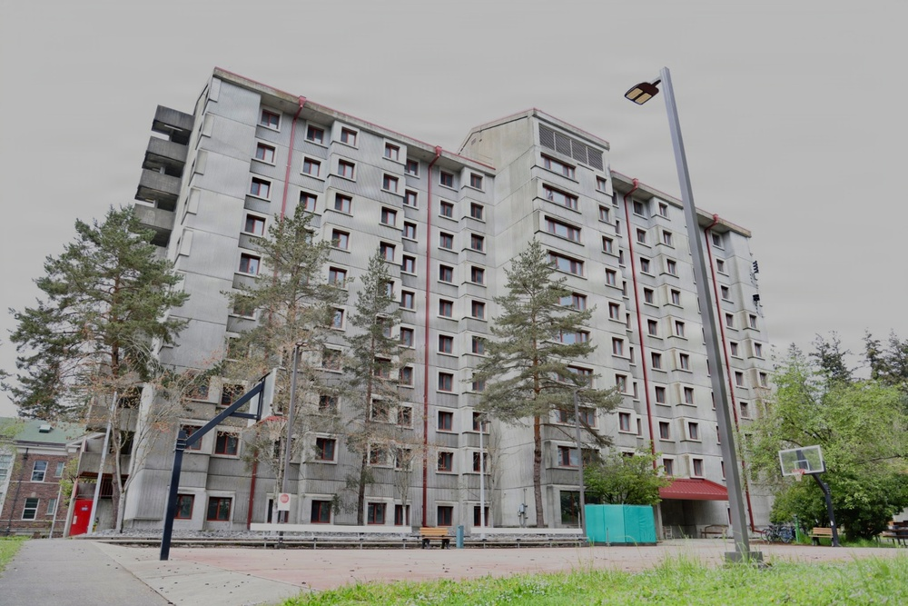

U.S. Navy photo by Amanda McCarthy · DVIDS 9636087 · PUBLIC DOMAIN · The recently renovated Unaccompanied Housing facility at Naval Base Kitsap-Bremerton awaits future occupants. Date taken April 22, 2026. Caption must say April file photo, not today’s announcement.
USNI News
USNI: Navy finishes its first barracks overhaul under the housing push
USNI News, Thursday: the Navy finished the first of its modernization projects meant to move sailors into shore housing as part of the Pentagon’s Barracks Task Force. Installations command said the service renovated living quarters at Naval Base Kitsap-Bremerton and installed new furnishings. A Navy release on the same Bremerton unaccompanied-housing work said the 10-story, 152-room building now holds 304 beds and finished 30 days early on April 6, after fire and water damage in August 2025. One finished building starts the task force; the wider barracks problem is still open.
USNI News · Read source →